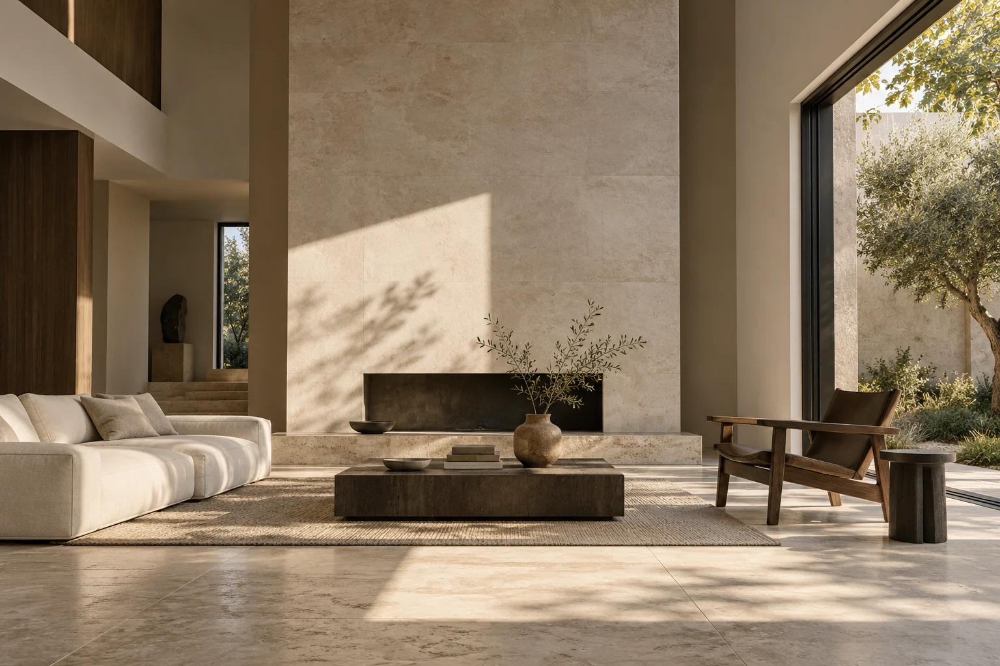
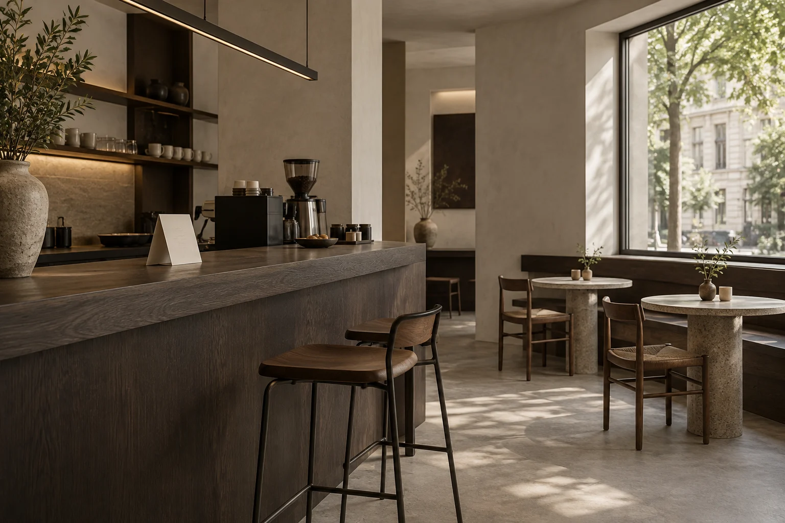
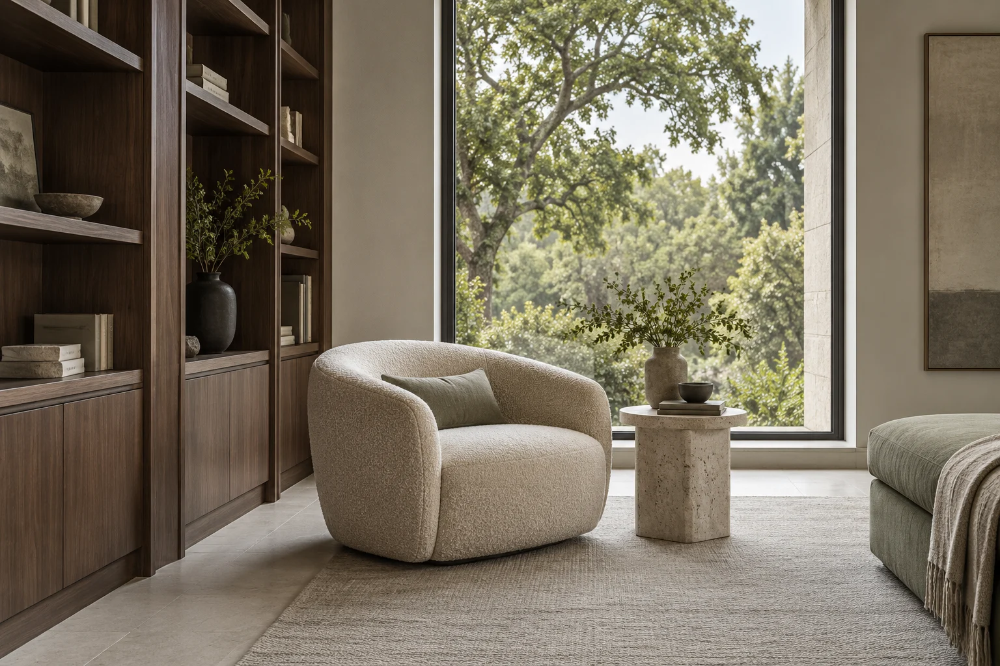
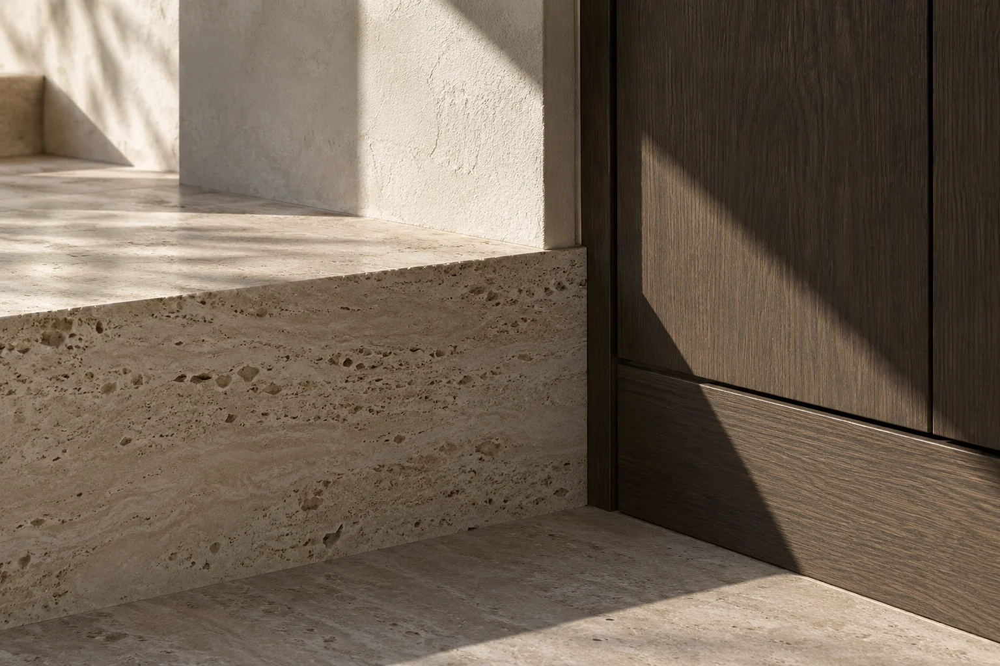

Dar forma
al habitar.
Interiores que empiezan por la luz y se construyen alrededor de tu manera de vivir.
Explorar los conceptosLuz que entra.
Materia que permanece.
Espacio para lo cotidiano.

Muestra de desarrollo web. Estudio ficticio e imágenes generadas con IA.
Distintas formas
de habitar.
3 conceptos


Tres exploraciones de un mismo principio: dejar que cada material y cada entrada de luz encuentren su lugar.
Son conceptos ficticios; no son obras ejecutadas ni proyectos de clientes.
La forma empieza
en la materia.
La superficie que tocas, la luz que refleja y el tiempo que deja su huella. Explora los materiales de este universo.
Travertino claro
Poros abiertos, tacto mineral y una luz que se vuelve suave. El punto de equilibrio del espacio.

Escuchar.
Después, diseñar.
Un espacio no empieza en un plano. Empieza en cómo quieres sentirte al llegar.
Forma es un estudio conceptual de interiores. Su propuesta reúne distribución, luz y materiales en una dirección que puedas entender y hacer tuya.
Escuchar
Hábitos, referencias y prioridades. Definir lo que importa antes del primer trazo.
Explorar
Probar composiciones y materiales hasta encontrar una idea que lo conecte todo.
Dar forma
Organizar el concepto y sus decisiones para poder revisarlo con claridad.
Tu idea,
un primer trazo.
Prueba el generador de brief. Resume lo que imaginas y descarga un punto de partida para tu espacio.
Esta demo funciona en tu navegador. No envía datos, no contacta a un estudio y no genera una cotización.